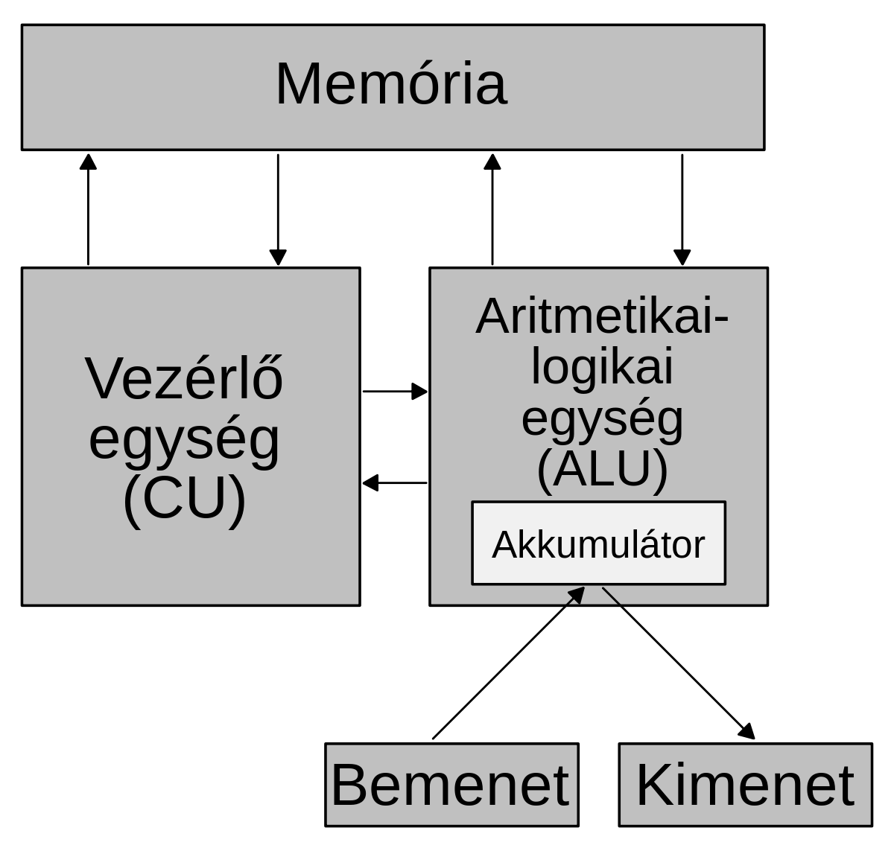

- Legyen teljesen elektronikus.
- A gép egyszerre egy műveletet hajt végre, de azt igen gyorsan.
- Használjon kettes számrendszert. Ez a számolási műveletek jelentősen leegyszerűsítette a számítógép számára, nő a sebesség, csökken a tárolási igény.
- Használjon belső memóriát. A számítógép gyors működése következtében nincs értelme annak, hogy minden egyes lépés után emberi beavatkozás történjen a számítás menetében. A belső memóriában a részeredmények tárolhatók, és így a gép egy bizonyos műveletsorozatot automatikusan el tud végezni.
- Tárolt program elve: A számítások menetére vonatkozó utasítások kifejezhetők számmal, azaz adatként kezelhetők. Így ezek éppúgy a belső memóriában tárolhatók, mint bármilyen más adat. Azáltal, hogy a számítógép belső memóriájában utasításokat tárolhat, a számítógép önállóan képes dolgozni, mivel mindegyik lépés után memóriája utasítja a további teendőkre anélkül, hogy emberi beavatkozásra kellene várnia.
- Legyen univerzális a gép. A számítógép különféle feladatainak elvégzésére nem kell speciális gépeket készíteni.